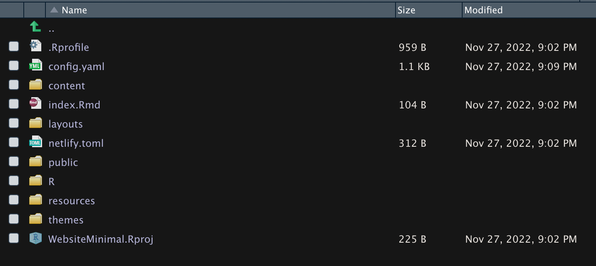

I created this website using R and the R package blogdown. It was actually really easy to make.
Fist I installed the packaged with the code
install.packages(“blogdown”)
and then I ran the command:
blogdown::install_hugo()
Then I created a new project in R and selected the option to create a website with hugo, and I selected a theme and it generated a folder within my working directory with an entire website template created for me to use. There are lots of different website templates that you can use when you first create your webpage at https://themes.gohugo.io/

There are lots of commands you can use like new_post() which creates a new folder in the proper directory and links it to your webpage with an r markdown file generated inside of it for you to design your new post with (this template was for a blogging website)
You can check on how your website looks in real time in the viewer on R Studio when you run the command
blogdown::serve_site()
These blog posts I edited to portray this to you in R Markdown